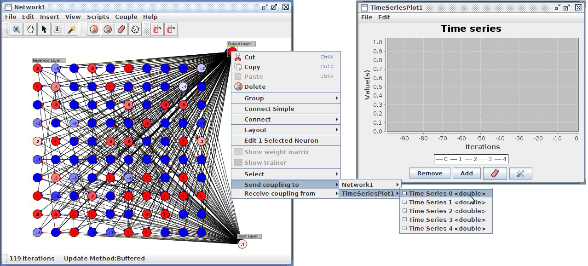

Couplings
A coupling represents a one-way informational link between two objects in a Simbrain simulation. In this way information can be made to flow from one component to another (e.g. from a network to a bar chart). When using the couplings manager, the attribute which sends information to another attribute is known as a producer, and the attribute receiving that information is known as a consumer (see coupling creation).
A list of all current couplings can be found in the couplings tab of the property tab at the bottom of the desktop.
Most windows in Simbrain (i.e. workspace components) are wrappers around other objects (e.g. neurons), whose values can be linked to one another. These values are attributes and can (for instance) include such values as the activation of a given neuron in the workspace, or a value of a line on a time-series. Attributes can be thought of as the "hooks" or "anchor points" that make up couplings, and couplings represent the uni-directional data flow between these hooks. For example, a simulation might involve coupling neurons whose neurons are producers to a bar chart whose bars are consumers (to see this, try bar chart test in the script menu).
An example is shown below. One network controls the man, the
other network controls the mouse. The man network has motor
neurons that use couplings from, e.g., the straight neuron (producer)
to the man's "go straight" motor (a consumer). The man's
left and right sensors (producers) are also attached to the left and
right neurons (consumers). Similarly for the mouse network.

An attribute is any part of a
component which has a value that may be sent to or recieved from
another component, i.e. something that produces values or consumes
values. Examples are neuron activations, weight strengths, or bars on a
bar chart, or sensor values for an agent in a virtual world. A
coupling is a pair that contains one producing attribute and one
consuming attribute.
Each attribute has a data type: numeric, String, etc. Currently only numeric data types are used. The data type is shown in terms of the relevant Java class or primitive data type. Currently most attributes in Simbrain are of type double, a kind of floating point number. Couplings can only occur between attributes which share the same data type.
The attributes in a component can be viewed in the coupling manager dialog.
Coupling Manager
To open the coupling manager press the coupling
manager
button  on the Simbrain toolbar or use the menu Couplings > Coupling Manager.
The coupling manager allows you to create and delete couplings , set
attribute visibility, and view workspace attributes. The coupling
manager is organized in to three columns. Multiple items in each
column can be selected by holding the shift key while selecting items
or ranges of items.
on the Simbrain toolbar or use the menu Couplings > Coupling Manager.
The coupling manager allows you to create and delete couplings , set
attribute visibility, and view workspace attributes. The coupling
manager is organized in to three columns. Multiple items in each
column can be selected by holding the shift key while selecting items
or ranges of items.
Producer / Consumer lists: these are the columns on the left and right side of the coupling manager: producers on the left; consumers on the right. Intuitively you are connecting a consumer to a producer to produce a coupling, which is displayed in the middle. The drop down box at the top of each column shows all current workspace components. Selecting that component shows what producing or consuming attributes are currently visible in that component.
Coupling list: this is the middle column of the coupling manager and it shows all current couplings in the workspace (not only some subset of couplings).
The following commands are possible in the coupling manager:
Add coupling(s):
This button creates new couplings, as follows. It begins with the
first selected attribute in the producer list and the first
selected attribute in the producer list, and then creates a coupling
from those attributes. If multiple consumers and producers
are selected it creates as many couplings as it can in this way.
The default is to link each selected producer with one selected
consumer, but if many-one is selected in the drop-down box next
to the add coupling(s) button, then each selected consumer is coupled
to all selected producers.
Delete Couplings: This button deletes all selected couplings from the coupling list.
Set Attribute Visibilities: This button opens up the attribute visibility dialog for the currently selected consumer or producer list.

Not all attributes are automatically "visible" in the relevant gui
components (coupling manager, menus, etc. described below).
The reason is that there are so many things that can be attributes
(every numerical property of every neuron and synapse in a neural
network, for example), that it would overwhelm the
gui. Each component has some attributes visible by
default. To modify what the visible attributes are, use the
set attribute visibility dialog, accessible from the coupling manager. For
example, in this dialog, we see available attributes for the currently
selected network component. Only neuron activations are
visible in this component. When clicking on the visibility
checkboxes notice that attributes appear and disappear in the producer
list window.

There are at least 4 ways to create couplings.
1. Use the coupling manager, as described in the discussion
of the coupling manager above. An example is shown in the screenshot
below. In that example, a coupling is created between the activation
attribute of
neuron 102 in network 1 (the producer), and one time series (one
colored line, the consumer) in a time series plot. So activation
of that neuron will be be plotted as time series when the simulation
runs.
2. Via context menus inside specific components (see below). This is for making one coupling at a time. E.g. if
you right click on a neuron in a neural network a context menu will
point you to all other potential consuming and producing attributes in
the whole workspace. These context menus are built at the
workspace menu by polling all current workspace components.

3. Via "coupling" commands in some menus. This can
be used to create multiple couplings from one component to another, in
one shot. Quick and
easy! The source component is the one from which the menu command
is called, and the target component is the one selected using that menu
command. For example, in the screenshot below couplings are being
made from Network1 to timeSeriesPlot1.
The way it works is that all visible producers in the source
component (i.e. those that would be visible if the coupling manager
were opened and that component were selected in the source list) and
coupled 1-1 to visible consumers in the target component. The
order of attributes is the same as appears in the producer and consumer
lists. For example, in the screenshot below, the first five neuron
activations are coupled to the available 5 time series in the time
series plot.
Notice that in the screenshot the couplings tabs is open on the bottom
of the workspace and that it shows the couplings that were
made.

4. Using a beanshell script one can directly code couplings.
While efficient for more advanced users, scripts are generally speaking
not a part of the simbrain GUI (with perhaps exception to their
selection from a menu or any GUIs they might spawn). See the Scripting page for more information.